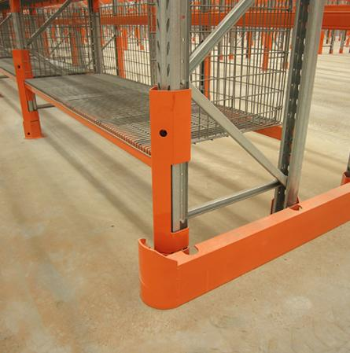
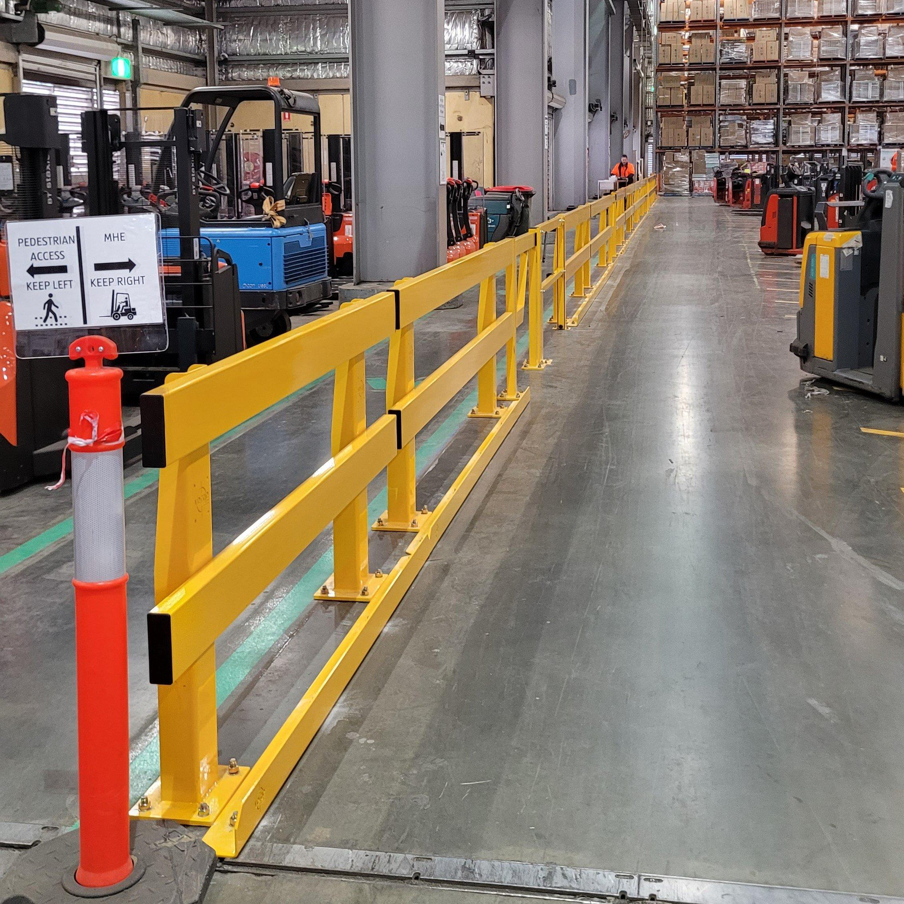
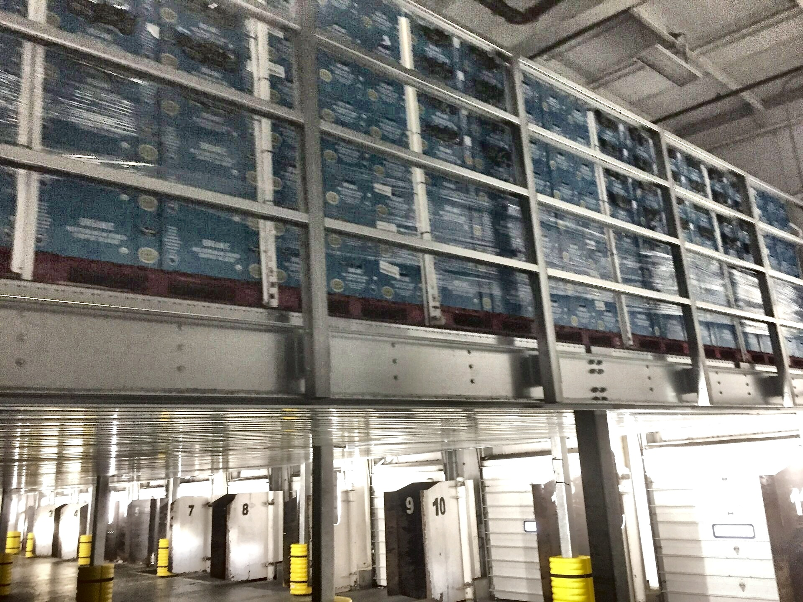
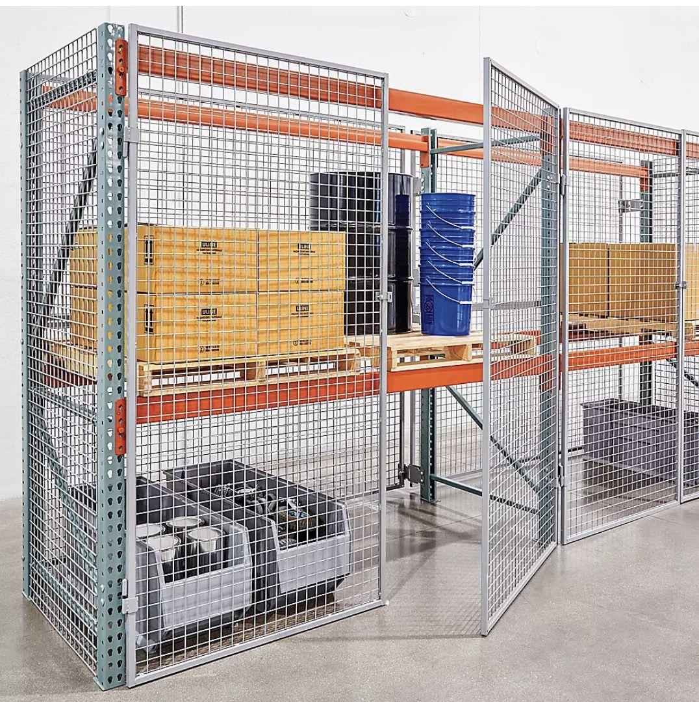
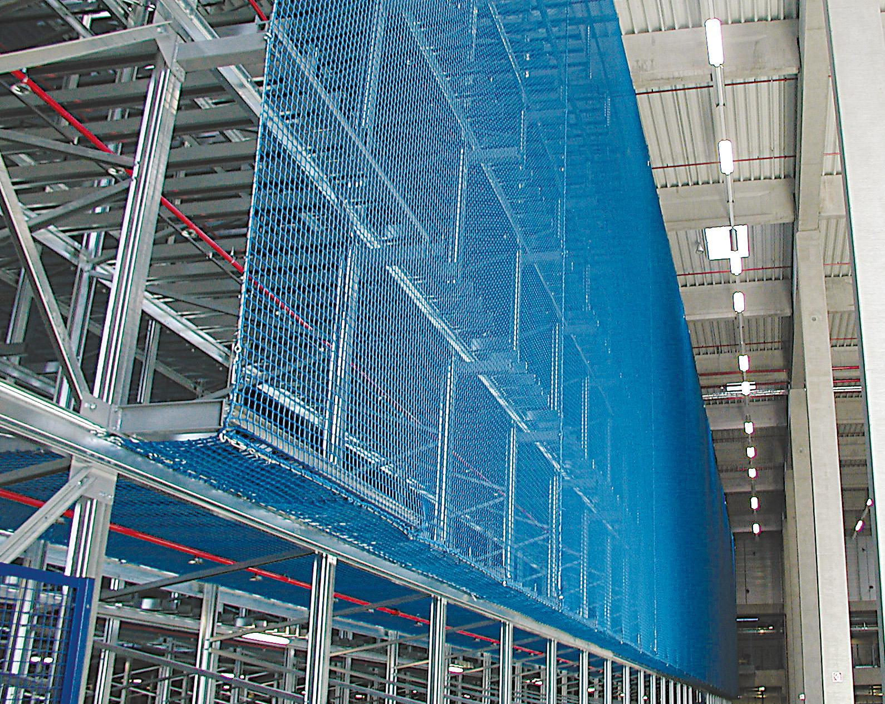
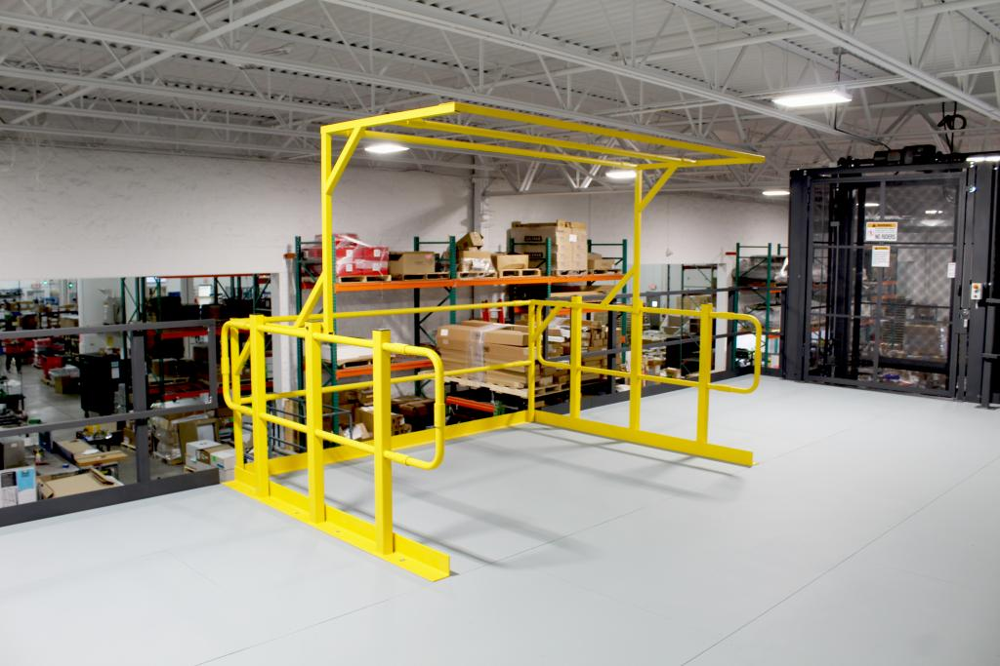
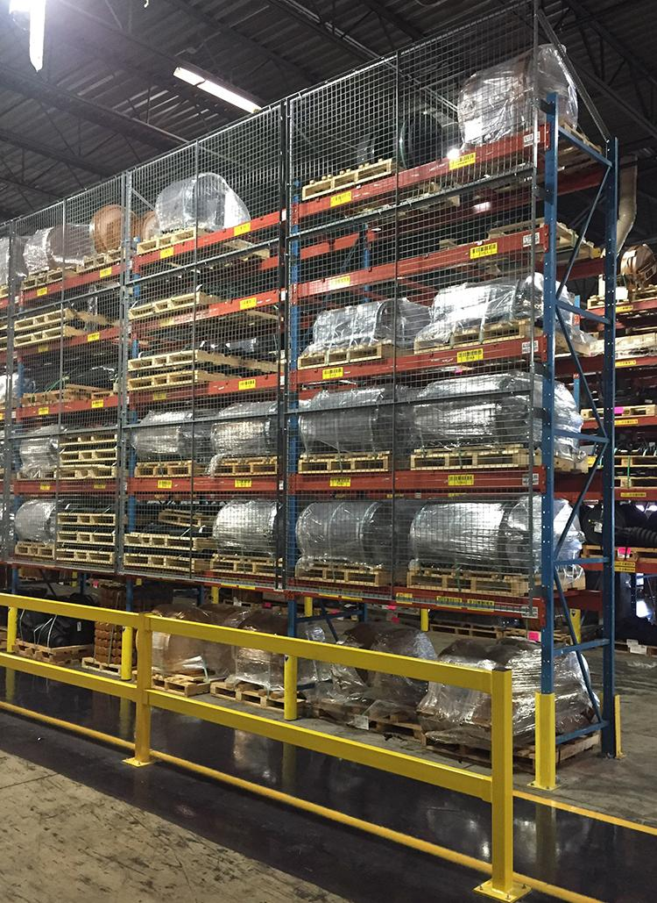

Keep People, Product, and Equipment Out of Harm's Way
Rack protection, safety netting, loading dock safety, wire mesh, and facility-wide impact protection work together to reduce risk across the building.
A Safer Floor Is a More Productive One
Risk and downtime tend to move together. The right safety infrastructure brings both down while protecting employees, equipment, and inventory.
We help organizations pinpoint the safety equipment that protects people and property without getting in the way of daily operations or long-term growth.
What We Evaluate
- Forklift traffic patterns, pedestrian walkways, and high-risk zones
- Rack protection, product containment, and falling-object hazards
- Loading dock operations, trailer access, and shipping & receiving
- Where guardrails, bollards, and barriers need to go
- OSHA requirements and where operational risk needs to come down
- Planned expansion, equipment changes, and long-term safety needs
Every Facility Has Its Own Risk Profile
Traffic patterns, storage systems, loading operations, and workplace hazards look different everywhere. We evaluate all four to build an integrated safety plan around your facility, not a generic one.

Rack Protection Systems
Guards absorb forklift impacts before they reach rack uprights and structural components, which keeps repair bills down and the system sound.
Best fit: busy aisles and distribution centers
Guardrails & Pedestrian Barriers
Heavy-duty guardrails draw a hard line between vehicle traffic and walkways, cutting down on the accidents that happen when the two mix.
Best fit: manufacturing plants and fulfillment centers
Safety Bollards
Positioned at columns, door openings, equipment, and utilities, bollards take the hit so accidental vehicle impacts don't reach what's behind them.
Best fit: areas with frequent vehicle traffic
Wire Mesh Rack Backing & Rack Enclosures
Mesh backing keeps product from falling through into pedestrian aisles, improving containment and helping meet facility safety codes.
Best fit: rack next to walkways or workstations
Safety Netting Systems
Netting holds product in place across rack systems, mezzanines, and elevated storage, cutting down on falling-object hazards below.
Best fit: high-bay and elevated storage areas
Loading Dock Safety Equipment
Wheel chocks, dock barriers, vehicle restraints, communication lights, and edge protection close the common gaps in dock safety.
Best fit: docks with steady trailer traffic
Mezzanine & Elevated Platform Safety
Guardrails, gates, handrails, and fall protection keep employees working at height as safe as those on the ground floor.
Best fit: mezzanines and elevated work platforms
Integrated Warehouse Safety Systems
Rack protection, pedestrian barriers, netting, dock safety, and access control come together as one strategy built around your specific facility.
Best fit: facilities wanting comprehensive risk reductionFrom Safety Walkthrough to an Integrated Strategy
We track how people, equipment, and inventory actually move through your facility, so every recommendation lowers risk without slowing anyone down.
Evaluate
Walk forklift traffic, pedestrian walkways, rack systems, loading dock operations, elevated storage, and facility-specific risks.
Design
Weigh rack protection, safety netting, wire mesh, guardrails, bollards, and dock safety equipment against each other to land on the right strategy.
Implement
Handle product selection, installation, and system integration in a way that protects assets without disrupting daily performance.
Ready to Close the Gaps in Your Safety Plan?
Rack protection, dock safety, netting, or a full facility-wide overhaul—we'll help identify the safety equipment that protects your people, inventory, and long-term operation.